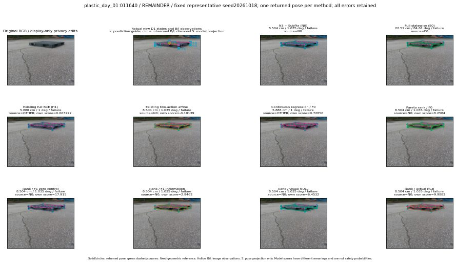

실선은 반환 자세, 초록 점선은 고정 기하 참조입니다. S는 영상 관측이 아닙니다. 점수는 모델별 의미가 다르며 보정된 안전 확률이 아닙니다. 개인정보 처리는 표시 사본에만 적용했습니다.
| 방법·seed | 위치 / 회전 / 공동성공 | 실제 출처 | 선택 후보 | 각 모델 자체 점수 |
|---|---|---|---|---|
| N0 | 8.504 cm / 1.035 deg / failure | N0 | N/A | N/A |
| E0 | 22.51 cm / 84.61 deg / failure | E0 | N/A | N/A |
| E0_REGENERATED | 22.51 cm / 84.61 deg / failure | E0 | E0_REGENERATED | N/A |
| POSEFIX_SUBPIX_PF_ANCHOR | 8.415 cm / 0.8358 deg / failure | OTHER | N/A | N/A |
| POSEFIX_SUBPIX_YOLO_ANCHOR | 8.415 cm / 0.8358 deg / failure | OTHER | N/A | N/A |
| D1_H1_MLP_s20261018 | 5.888 cm / 1 deg / failure | OTHER | G13/ORIGINAL_WD/selected | 0.06322214007377625 |
| D1_H1_MLP_s20261019 | 5.888 cm / 1 deg / failure | OTHER | G13/ORIGINAL_WD/selected | 0.14763608574867249 |
| D1_H1_MLP_s20261020 | 5.888 cm / 1 deg / failure | OTHER | G13/ORIGINAL_WD/selected | -0.6088180541992188 |
| D1_H1_PAIR_MLP_s20261018 | 22.51 cm / 84.61 deg / failure | E0 | E0_REGENERATED | -1.119858980178833 |
| D1_H1_PAIR_MLP_s20261019 | 8.504 cm / 1.035 deg / failure | N0 | N0 | -1.1876951456069946 |
| D1_H1_PAIR_MLP_s20261020 | 8.504 cm / 1.035 deg / failure | N0 | N0 | -1.2190709114074707 |
| D1_H1_PAIR_ROLE_AFFINE_s20261018 | 8.504 cm / 1.035 deg / failure | N0 | N0 | -0.19139164686203003 |
| D1_H1_PAIR_ROLE_AFFINE_s20261019 | 8.504 cm / 1.035 deg / failure | N0 | N0 | -0.6560636758804321 |
| D1_H1_PAIR_ROLE_AFFINE_s20261020 | 8.504 cm / 1.035 deg / failure | N0 | N0 | -0.22968284785747528 |
| R_CONT_F0_s20261018 | 5.888 cm / 1 deg / failure | OTHER | G13/ORIGINAL_WD/selected | 0.7285564541816711 |
| R_CONT_F0_s20261019 | 5.888 cm / 1 deg / failure | OTHER | G13/ORIGINAL_WD/selected | 0.6772507429122925 |
| R_CONT_F0_s20261020 | 5.888 cm / 1 deg / failure | OTHER | G13/ORIGINAL_WD/selected | 0.8003222346305847 |
| R_ORDER_F0_s20261018 | 8.504 cm / 1.035 deg / failure | N0 | N0 | 8.258442878723145 |
| R_ORDER_F0_s20261019 | 8.504 cm / 1.035 deg / failure | N0 | N0 | 4.723422050476074 |
| R_ORDER_F0_s20261020 | 5.888 cm / 1 deg / failure | OTHER | G13/ORIGINAL_WD/selected | 3.212651491165161 |
| R_ORDER_F1_ZERO_s20261018 | 8.504 cm / 1.035 deg / failure | N0 | N0 | 17.91521453857422 |
| R_ORDER_F1_ZERO_s20261019 | 5.888 cm / 1 deg / failure | OTHER | G13/ORIGINAL_WD/selected | 10.969637870788574 |
| R_ORDER_F1_ZERO_s20261020 | 5.888 cm / 1 deg / failure | OTHER | G13/ORIGINAL_WD/selected | 10.54313850402832 |
| R_ORDER_F1_s20261018 | 8.504 cm / 1.035 deg / failure | N0 | N0 | 2.946167230606079 |
| R_ORDER_F1_s20261019 | 8.504 cm / 1.035 deg / failure | N0 | N0 | 8.823369026184082 |
| R_ORDER_F1_s20261020 | 8.504 cm / 1.035 deg / failure | N0 | N0 | 1.9383083581924438 |
| V_ORDER_NULL_s20261018 | 8.504 cm / 1.035 deg / failure | N0 | N0 | 6.453155517578125 |
| V_ORDER_NULL_s20261019 | 8.504 cm / 1.035 deg / failure | N0 | N0 | 4.192354679107666 |
| V_ORDER_NULL_s20261020 | 5.888 cm / 1 deg / failure | OTHER | G13/ORIGINAL_WD/selected | 4.625824928283691 |
| V_ORDER_RGB_s20261018 | 8.504 cm / 1.035 deg / failure | N0 | N0 | 9.988323211669922 |
| V_ORDER_RGB_s20261019 | 8.504 cm / 1.035 deg / failure | N0 | N0 | 3.9525020122528076 |
| V_ORDER_RGB_s20261020 | 8.504 cm / 1.035 deg / failure | N0 | N0 | -5.138132572174072 |